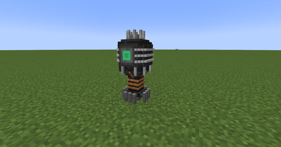
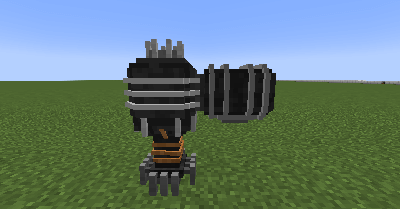
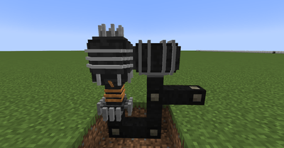
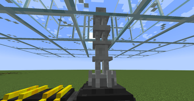

MS Reactor

The Molten Salt Reactor is a far more refined version of the crude Fission Reactor, but is also far more expensive. Instead of directly heating the water using fission, the reactor uses a molten fissile material that in turns heats a conductive salt. This molten conductive salt is then passed through a heat exchanger which will in turn boil water to produce steam. This has the added benefit of not needing to have the reactor core submersed directly in water, allowing you to be flexible with turbine placement.

To build a Molten Salt Reactor, you will need to craft a MS Reactor Core, Freeze Plug, and Molten Salt Supplier. First, place the Freeze Plug, and then place a the Reactor Core on top of it:
Facing the green port on the core, place a Molten Salt Supplier so that its green port faces the Core's:
Both the Freeze Plug and Supplier require a small amount of energy to work, so you will need to power them:

As mentioned, the MS Reactor isn't cooled by water and uses a specialized conductive salt known as FLiNaK. This salt is supplied by the Freeze Plug. Simply make the salt and place the pellets in the Plug. The salt is not consumed by the reactor meaning you won't have to replenish it, but the more salt you add, the more heat it will be able to transfer.
The fissile salt that the Molten Salt Reactor uses is a specially prepared compound known as LiF-ThF4-UF4. However, as the name of the reactor implies, this salt must be molten in order to be useful. Place the fissile salt pellet in the Molten Salt Supplier to melt it. Each salt pellet melts to 250 mB, and the core has an internal capacity of 1000 mB. The salt is slowly consumed over time and produces waste which is also collected by the supplier. Just like the Fission Reactor, the hotter the reactor, the faster the fuel is consumed.
Now that the reactor has melted the conductive salt, you need a way to move it and disperse the heat. To do this, you will need to craft some VS-Ceramic Pipe and a Heat Exchanger. The VS Pipe is connected to the top of the Reactor Core and fed into the bottom of the Heat Exchanger. The Heat Exchanger is incredibly efficient, and a single one can be sufficient. It must be placed in a 5x5x2 pool of water like the Fission Reactor Core. It should be noted that while the exchanger doesn't have to be directly above the reactor core by placing a longer VS Pipe, the longer the VS Pipe is, the more heat it will radiate away before it reaches the Exchanger!

Another perk of the MS Reactor is that is cannot melt down, making it significantly safer. However, like its predecessor, the hotter the reactor gets, the faster it burns fuel. To decrease the fuel usage, a MS Control Rod can be used. To use it, attach it to the side of the MS Reactor Core, and control it as with the Fission Reactor's variant.